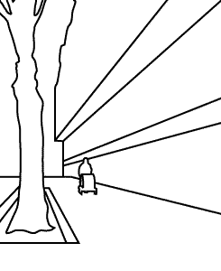

|  |
| Fuka’s choice to snap her shutter at the moment the woman occupied the middle ground of the picture establishes just that – a middle ground, and thus makes the space seem deeper than if there were only a foreground and background. |
| [ foreground | middle | background ] |